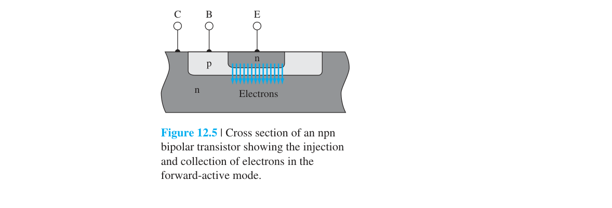
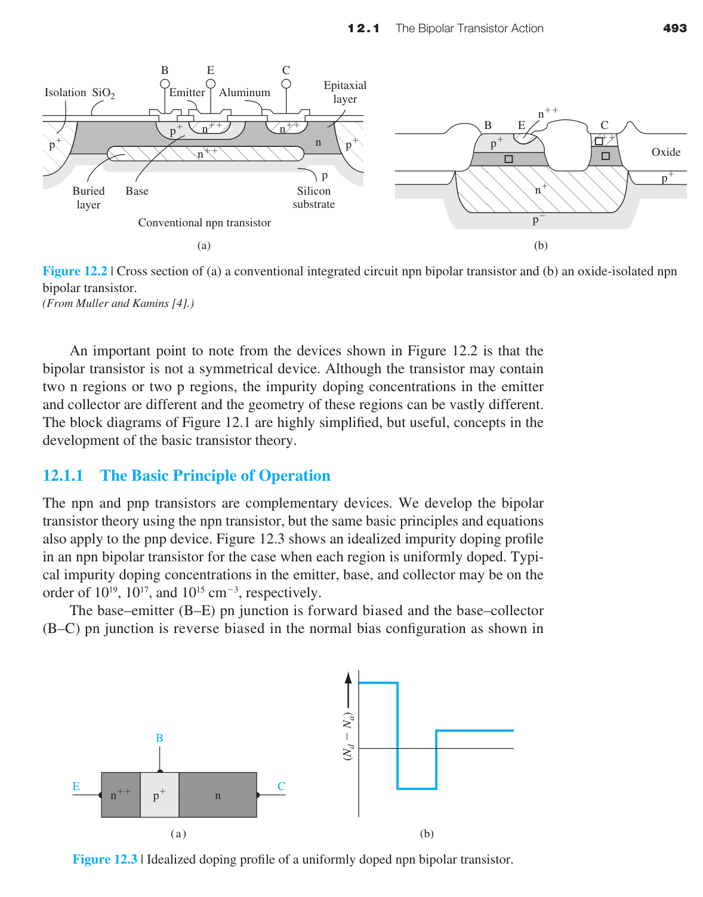
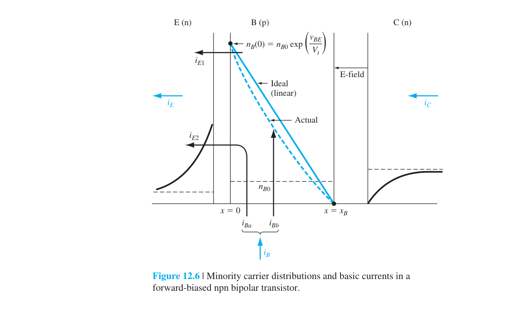
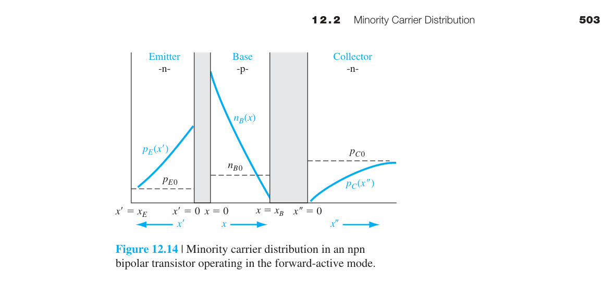
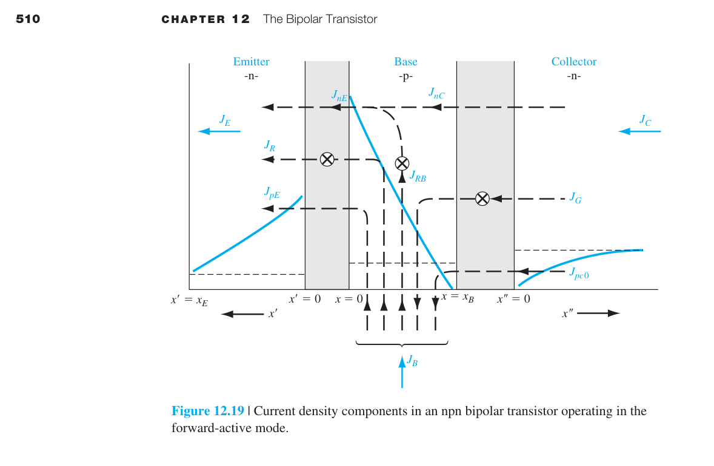
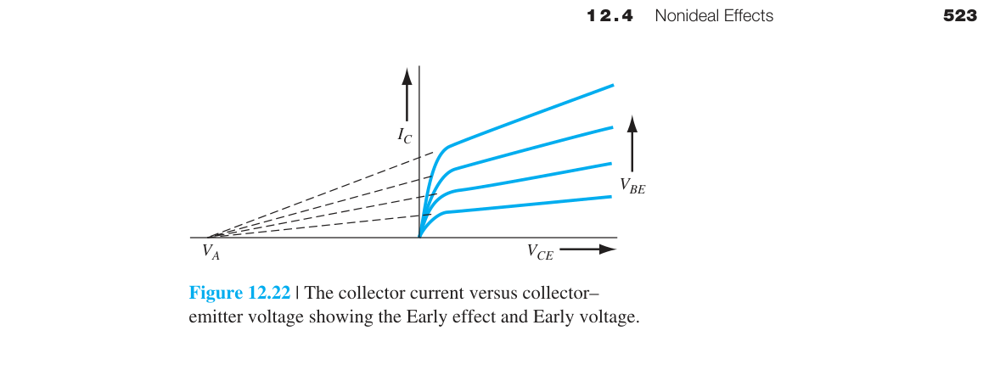

雙極性接面電晶體（BJT）—完整章
12.0 本章預覽
pn 接面二極體（第七、八章）是兩端元件——你只能控制它導通或不導通，無法實現放大。放大的本質是用小信號控制大信號。這需要第三個端點。
BJT 是第一個被發明的三端固態放大元件（1947 年，Bardeen、Brattain、Shockley）。它的基本結構是兩個 pn 接面背靠背放置，讓它們互相作用——一個接面注入少數載子，另一個接面收集它們。透過這種「注入→傳輸→收集」的機制，一個從基極流入的小電流 $I_B$（微安級）可以控制一個從集極流入的大電流 $I_C$（毫安級），實現電流放大。
雖然 MOSFET 後來取代 BJT 成為數位電路的主流，但 BJT 在類比領域（音頻放大器、射頻前端、電源管理）仍然佔有重要地位——它的跨導更高、匹配更好、雜訊更低。
🧭 本章推理地圖
- 兩接面共享薄基極產生 transistor action（§12.1）
- 邊界條件決定基極少數載子分布（§12.2）
- 注入與傳輸因子建立電流增益（§12.3）
- 幾何、高注入與高場造成非理想效應（§12.4）
- 進階篇以模型、頻率與結構延伸（§12.5–§12.8）

12.1 補充：BJT 結構、電流關係與操作模式
從兩個二極體到一個電晶體

如果你只是把兩個 pn 二極體背靠背放在一起（p-n-p 或 n-p-n），而不讓它們的基極區域共用，你得到的只是兩個獨立的二極體——沒有放大功能。BJT 的奧妙在於：兩個接面共用同一個狹窄的基極區域。射極注入的少數載子跨過這個狹窄基極，被集極收集。基極寬度 $W_B$ 必須遠小於少數載子的擴散長度 $L_B$——這是 BJT 能夠放大的根本原因。

為什麼射極要重摻雜？射極的任務是注入大量電子到基極。重摻雜 n⁺ 射極確保射極電流中以電子為主（$\gamma\approx1$）——相較之下從基極注入射極的電洞很少。如果射極和基極摻雜相同，兩種載子的注入量相當→沒有淨放大。
為什麼基極要極窄？注入的電子在基極中是少數載子，會與多數載子（電洞）復合。如果基極太寬，大部分電子在到達集極前就復合了→沒有集極電流→沒有放大。$W_B \ll L_B$ 確保絕大多數電子存活並被收集。
為什麼集極要輕摻雜？集極的主要任務是收集電子，但 BC 接面的空乏區主要在輕摻雜側→輕摻雜的集極側承擔了大部分電壓降→提高了崩潰電壓（$V_{CE}$ 耐壓）。
四種操作模式
| 模式 | BE 接面 | BC 接面 | 物理行為 | 用途 |
|---|---|---|---|---|
| 順向主動 (Forward-active) | 順偏 | 逆偏 | 射極注入→基極傳輸→集極收集 | 線性放大器 |
| 截止 (Cutoff) | 逆偏 | 逆偏 | 兩個接面都不注入→$I_C\approx0$ | 數位 OFF |
| 飽和 (Saturation) | 順偏 | 順偏 | 兩個接面都注入→基極充滿過量載子 | 數位 ON |
| 反向主動 (Inverse) | 逆偏 | 順偏 | 集極當射極用→$\beta_R\ll\beta_F$ | 少用 |
在順向主動模式下，$V_{BE}\approx0.7$ V（順偏），$V_{BC}<0$（逆偏）。三個端點電流滿足 Kirchhoff 電流律：$I_E = I_B + I_C$。

12.1.4 BJT 放大原理——為什麼三端元件能放大？
BJT 能放大訊號的根本原因：用小的基極電流 $I_B$ 控制大的集極電流 $I_C = \beta I_B$。在共射極組態中，輸入加在 BE 端，輸出從 CE 端取出。
電壓放大：輸入端的 BE 接面是順偏二極體→小訊號電阻 $r_\pi = \beta/g_m$（通常幾 kΩ）。輸出端的 CE 之間有大電阻 $r_o = V_A/I_C$（通常幾百 kΩ）。電壓增益 $A_v = -g_m R_L$——輸入電阻低、輸出電阻高→用一個小的輸入電壓變化就能控制一個大的輸出電壓變化。
📝 自編概念例 — 模式判斷
題目：BE 順偏、BC 逆偏時屬何模式？
答案：順向主動，適合線性放大。
12.2 補充：基極中少數載子的分布
這節是 BJT 物理的核心。中性基極中沒有顯著電場，少數載子主要靠擴散穿越基極。
因為基極極窄（$W_B\ll L_B = \sqrt{D_B\tau_B}$），電子在基極中的傳輸時間遠短於復合時間→復合項可忽略→$d^2\delta n_B/dx^2\approx0$。這意味著電子濃度在基極中呈線性分布——這是 BJT 分析中最關鍵的簡化結果。
為什麼線性分布如此重要？① 擴散電流 $J_n = eD_B(dn/dx)$ 與梯度成正比。線性分布→梯度為常數→電流在整個基極中不隨位置變化→沒有載子在半路「消失」。② 梯度 $= \delta n_B(0)/W_B$→$I_C \propto 1/W_B$→基極越薄，電流越大。③ 這是「短二極體」近似（8.1.8）的直接應用——BJT 的基極本質上就是一個短二極體。

在 BE 接面邊界（$x=0$），Shockley 邊界條件給出：$\delta n_B(0)=n_{B0}(e^{V_{BE}/V_T}-1)$。在 BC 接面邊界（$x=W_B$），逆偏將所有到達的電子掃入集極→$\delta n_B(W_B)\approx0$。直線連接兩點→斜率為常數→擴散電流 $J_n=eD_B\,\delta n_B(0)/W_B$ 在整個基極中為常數。
📐 例題 — 梯度與電流
$\delta n_B(0)=10^{12}$ cm⁻³、$W_B=0.2$ µm、$D_B=10$ cm²/s → $J_n=e D_B \delta n_B(0)/W_B\approx0.8$ A/cm²。
互動模型｜BJT 基極少數載子分布與電流增益
調整 BE／BC 偏壓、基極寬度與擴散長度，比較完整擴散方程和短基極線性近似，並觀察基極復合如何降低傳輸因子與電流增益。
🎛️ 開啟 BJT 基極載子模型收合 BJT 基極載子模型接面偏壓與 W_B/L_n → 載子分布、J_C、α_T、β
12.3 補充：電流增益的物理根源 ⭐

BJT 的電流放大本質上由兩個因子乘積決定：
射極注入效率 $\gamma$：「有用的 vs 浪費的」
射極電流 $I_E$ 有兩個成分：從射極注入基極的電子電流 $I_{nE}$（有用），和從基極注入射極的電洞電流 $I_{pE}$（浪費——這些電洞只在射極中與多數載子復合，對集極電流無貢獻）。
要使 $\gamma\to1$，分母中的修正項必須 $\ll1$。這要求：$N_E\gg N_B$（射極遠重於基極）、$W_B$ 小、$L_E$ 大（射極中電洞擴散長度大→電洞在射極深處復合而非在界面附近堆積）。這就是為什麼射極是 n⁺、基極是 p、且基極極窄的根本原因。
基極傳輸因子 $\alpha_T$：「活著到達 vs 半路復合」
射極注入的電子不會全部到達集極。有些在基極中與電洞復合。復合損失的比例取決於基極寬度與擴散長度的比值：
$W_B/L_B$ 越小→$\alpha_T$ 越接近 1。典型 BJT：$W_B\sim0.2$ µm，$L_B\sim10$ µm→$W_B/L_B\sim0.02$→$\alpha_T\approx0.9998$。
⭐ 共射極電流增益 $\beta$
$I_B$ 主要由兩部分組成：補充基極復合損失的電洞（$I_{rB}$），和從基極注入射極的浪費電洞電流（$I_{pE}$）。
$\alpha=0.99$→$\beta=99$；$\alpha=0.98$→$\beta=49$；$\alpha=0.995$→$\beta=199$；$\alpha=0.9$→$\beta=9$。
$\alpha$ 從 0.99 降到 0.98 僅有 1% 的變化，但 $\beta$ 從 99 降到 49——下降了 50%！這就是為什麼 BJT 電路不能假設 $\beta$ 是精確值——你必須透過負回授（射極電阻、集極回授）來穩定偏壓點。這也是為什麼 BJT 放大器通常設計為對 $\beta>\beta_{\min}$ 都能正常工作。
也是因為這個敏感性，MOSFET 在數位電路中取代了 BJT：MOSFET 的「增益」由 $g_m$ 決定，$g_m$ 對製程變異的敏感度遠低於 BJT 的 $\beta$。
📐 例題 — 由 $\alpha$ 求 $\beta$
$\alpha=0.995$ → $\beta=0.995/0.005=199$。
補充：Ebers-Moll 模型
Ebers-Moll 模型是 BJT 最通用的描述
等效電路的四個元件：
- BE 二極體：$I_F = I_{ES}(e^{V_{BE}/V_T}-1)$——BE 接面的順向電流。
- BC 二極體：$I_R = I_{CS}(e^{V_{BC}/V_T}-1)$——BC 接面的電流（順向或反向取決於偏壓）。
- $\alpha_F I_F$（受控電流源）：BE 電流中成功穿越基極到達集極的比例。$\alpha_F \approx 0.99$。
- $\alpha_R I_R$（受控電流源）：BC 電流中穿越基極到達射極的比例。$\alpha_R \ll \alpha_F$（因為集極設計不是為了高效注入）。

在順向主動模式（$V_{BE}>0$, $V_{BC}<0$）：$e^{V_{BC}/V_T}\approx0$→$I_C\approx\alpha_F I_{ES}e^{V_{BE}/V_T} = \alpha_F I_E\approx I_S e^{V_{BE}/V_T}$。這就是我們熟悉的指數關係。
在飽和模式（$V_{BE}>0$, $V_{BC}>0$）：兩個二極體都導通→$I_C = \alpha_F I_F - I_R$。$I_R$ 開始抵消 $\alpha_F I_F$→$V_{CE}$ 降得很低（$V_{CE,sat} \approx 0.1$–$0.2$ V）。飽和區中兩個接面都順偏→基極中儲存大量過量載子→開關延遲（本章進階篇 §12.7）。
互易關係（reciprocity）：$\alpha_F I_{ES} = \alpha_R I_{CS}$——這不是巧合，而是半導體物理的自洽要求（來自二極體飽和電流的微觀定義）。這個關係減少了獨立參數的數量——Ebers-Moll 模型只需要 3 個獨立參數（$I_{ES}$, $\alpha_F$, $\alpha_R$）而非 4 個。
📝 自編概念例 — 飽和區
兩接面皆順偏時 $I_R$ 抵消部分 $\alpha_F I_F$，$V_{CE,sat}$ 降至約 0.1–0.2 V 並儲存基極電荷。
12.4 補充：非理想效應總覽
基極寬度調變與 Early 效應

在理想 BJT 中，$I_C$ 只取決於 $V_{BE}$，與 $V_{CE}$ 無關。但現實中 $V_{CE}$ 增加→BC 接面逆偏增加→BC 空乏區向基極側擴展→有效基極寬度 $W_B$ 變窄。
$W_B$ 變窄有兩個效應：① 電子濃度梯度 $\delta n_B(0)/W_B$ 變大→$I_C$ 增加。② 基極傳輸時間變短→$\alpha_T$ 輕微增大。兩者都使 $I_C$ 隨 $V_{CE}$ 增加而增加——這就是 Early 效應。
$V_A$（Early 電壓）的物理意義：$V_A$ 越大→$I_C$–$V_{CE}$ 曲線越平→輸出電阻 $r_o=V_A/I_C$ 越大→放大器增益越高。$V_A$ 取決於基極寬度——$W_B$ 越大，BC 空乏區的變化對 $W_B$ 的比例影響越小→$V_A$ 越高。但 $W_B$ 大也會降低 $\beta$（因 $\alpha_T$ 下降）。這是 BJT 設計中的經典取捨：$\beta$ vs $V_A$。
其他非理想效應
Webster 效應（高階注入）：當 $I_C$ 很大時，注入基極的電子濃度與基極多數載子電洞濃度可比（$\delta n_B\approx p_{B0}$）→為維持電中性，電洞濃度也必須增加→注入射極的電洞電流增大→$\gamma$ 下降→$\beta$ 隨 $I_C$ 增加而下降。
Kirk 效應（基極推擠）：在極高 $I_C$ 下，集極電流的空間電荷在 BC 空乏區中產生顯著的附加電場→空乏區向集極側移動→有效基極向集極延伸→$W_B$ 增加→截止頻率 $f_T$ 下降。
崩潰（Breakdown）：$V_{CE}$ 太高→BC 接面雪崩倍增→$I_C$ 急劇增大（與 pn 接面崩潰機制相同）。BJT 中崩潰電壓記為 $BV_{CEO}$（基極開路）或 $BV_{CBO}$（射極開路）。
12.4.6 崩潰電壓——BJT 的電壓天花板
BJT 有兩個關鍵的崩潰電壓指標：
$BV_{CBO}$（射極開路）：純粹是 BC 接面的雪崩崩潰電壓——與一個獨立的 pn 接面相同。取決於集極側的摻雜濃度 $N_C$：$N_C$ 越低→空乏區越寬→崩潰電壓越高。典型值：50–300 V。
$BV_{CEO}$（基極開路）：比 $BV_{CBO}$ 低得多。為什麼？因為在共射極組態中，雪崩倍增產生的額外電子被掃到集極→增加了 $I_C$→增加了 $I_B$（通過 $\beta$ 反饋）→進一步增加 $I_C$→正反饋迴路→在更低的電壓下就發生崩潰。
其中 $n$ 是雪崩倍增指數（通常 3–4 對 Si）。對 $\beta=100$，$n=4$：$BV_{CEO} \approx BV_{CBO}/100^{0.25} \approx BV_{CBO}/3.2$。所以一個 $BV_{CBO}=100$ V 的 BJT，$BV_{CEO}$ 只有約 30 V。
📐 例題 — 估算 $r_o$
$V_A=80$ V、$I_C=2$ mA → $r_o=40$ kΩ。
補充：混合-π 小訊號模型
在 DC 偏壓點
$g_m$（跨導）——最核心的參數：$g_m = \partial I_C/\partial V_{BE} = I_{CQ}/V_T$。它告訴你 $V_{BE}$ 的微小變化能產生多大的 $I_C$ 變化：$i_c = g_m v_{be}$。室溫（$V_T=0.026$ V）：$I_C=1$ mA→$g_m=38.5$ mS。$I_C=10$ µA→$g_m=0.385$ mS。注意 $g_m\propto I_{CQ}$——偏壓電流直接控制增益。
$r_\pi$（輸入電阻）：$r_\pi = v_{be}/i_b = \beta/g_m = \beta V_T/I_{CQ}$。$I_C=1$ mA、$\beta=100$→$r_\pi=2.6$ kΩ。$r_\pi$ 是從基極看向射極的等效電阻。
$r_o$（輸出電阻）：$r_o = \partial V_{CE}/\partial I_C = V_A/I_{CQ}$。來自 Early 效應的有限輸出阻抗。$I_C=1$ mA、$V_A=100$ V→$r_o=100$ kΩ。
BJT：$g_m=I_C/V_T=38.5$ mS/mA（每毫安偏壓電流產生 38.5 mS 的跨導）。
MOSFET（飽和區）：$g_m=2I_D/(V_{GS}-V_{TH})$。同樣 1 mA：若 $V_{GS}-V_{TH}=0.2$ V→$g_m=10$ mS；若 $V_{GS}-V_{TH}=0.5$ V→$g_m=4$ mS。
BJT 的 $g_m$ 大了 4–10 倍。更大的 $g_m$→更大的電壓增益（$A_v=-g_m R_C$）、更低的輸入參考雜訊。這就是為什麼低雜訊放大器（LNA）、高速運算放大器輸入級、和射頻功率放大器仍然偏好使用 BJT（或 BiCMOS 製程中的 BJT 部分）。
但 BJT 有 $r_\pi$ 的負載效應（輸入阻抗有限）和基極電流的散粒雜訊——這在極高阻抗信號源應用中不利。
📐 例題 — 估算 $g_m$
300 K、$I_{CQ}=2$ mA → $g_m=I_C/V_T\approx2/0.026\approx77$ mS。
12.1.1 基本操作原理
npn BJT 由重摻雜 n+ 射極、薄 p 型基極與較輕摻雜 n 型集極構成。
順向主動模式下，射極–基極接面順偏，電子由射極注入基極成為少數載子。
基極很薄且復合有限，大部分注入電子能擴散到反偏的基極–集極接面。
集極接面電場把電子掃入集極，形成遠大於基極復合電流的集極電流。
BJT 的放大能力因此來自注入、傳輸與收集三個連續物理步驟。
📝 自編概念例：薄基極的作用
題目：基極寬度遠小於電子擴散長度。
解：載子穿越前復合比例小。
答案：集極收集效率提高。
12.1.2 簡化電流關係
依端點電流守恆，射極電流等於集極電流與基極電流之和。
共基極電流增益定義為 $\alpha=I_C/I_E$，理想良好 BJT 的 $\alpha$ 接近但小於 1。
共射極增益定義為 $\beta=I_C/I_B$，它把較小基極電流與較大集極電流相連。
利用電流守恆可得 $\beta=\alpha/(1-\alpha)$ 與 $\alpha=\beta/(\beta+1)$。
因 $\alpha$ 接近 1，其微小製程變化可造成 $\beta$ 的大幅變動，所以電路不應依賴精確固定的 $\beta$。
📝 自編概念例：增益換算
題目：$\alpha=0.99$。
解：$\beta=0.99/(1-0.99)$。
答案：$\beta=99$。
12.1.3 操作模式
BJT 模式由射極–基極與集極–基極兩個接面的偏壓組合決定。
順向主動模式是 BE 順偏、BC 反偏，提供正常的射極注入與集極收集。
截止模式沒有足夠 BE 順偏，端點電流只剩漏電，適合作為數位關閉狀態。
飽和模式兩接面都順偏，基極與集極儲存大量電荷，端電壓低但關斷變慢。
反向主動模式交換射極與集極功能，但因結構摻雜不對稱，電流增益通常很低。
📝 自編概念例：模式辨認
題目：npn 的 BE、BC 都順偏。
解：兩接面都在注入載子。
答案：飽和模式。
12.1.4 BJT 放大
順向主動區的集極電流近似 $I_C=I_Se^{V_{BE}/V_T}$。
在直流工作點附近加入小訊號，可把指數曲線用切線線性化。
小訊號跨導為 $g_m=\partial I_C/\partial V_{BE}=I_C/V_T$。
集極負載把電流變化轉成電壓變化，共射極級通常產生反相電壓增益。
偏壓必須讓輸出擺動仍留在主動區，避免一端進入截止、另一端進入飽和而失真。
📝 自編概念例：跨導
題目：300 K、$I_C=1$ mA。
解：$g_m=I_C/V_T=1\text{ mA}/25.9\text{ mV}$。
答案：約 38.6 mS。
12.2.1 順向主動模式
BE 順偏使基極射極端的少數電子濃度按 $\exp(V_{BE}/V_T)$ 增加。
BC 反偏使集極端少數載子濃度接近零，建立跨越基極的濃度差。
當基極寬度遠小於擴散長度，復合有限，少數載子分布可近似為線性。
濃度梯度驅動電子擴散到集極端，再由 BC 空乏區電場快速掃入集極。
基極內少量復合需要由基極端補充，形成基極電流並使 $\alpha_T$ 小於 1。
📝 自編概念例：基極變窄
題目：保持邊界濃度，$W_B$ 減半。
解：濃度梯度約加倍。
答案：理想擴散集極電流約增大。
12.2.2 其他操作模式
截止時兩接面沒有顯著順偏，基極少數載子接近平衡值。
飽和時 BE 與 BC 都順偏，基極兩端少數載子濃度都提高，分布不再降到近零。
兩端同時注入造成大量儲存電荷，是飽和 BJT 關斷延遲的根源。
反向主動時 BC 接面作為注入端、BE 接面作為收集端，分布斜率反向。
使用兩接面的 Shockley 邊界條件，可用同一套少數載子方程描述所有模式。
📝 自編概念例：飽和分布
題目：基極兩端少數載子都高於平衡。
解：BE 與 BC 均在注入。
答案：對應飽和模式。
12.3.1 電流增益因子
射極注入效率 $\gamma$ 是射極注入電子電流占總射極注入電流的比例。
重摻雜射極與較輕摻雜基極可抑制基極向射極的電洞反注入，使 $\gamma$ 接近 1。
基極傳輸因子 $\alpha_T$ 是到達集極端的電子占進入基極電子的比例。
薄基極與長少數載子擴散長度減少復合，使 $\alpha_T$ 接近 1。
總共基極增益近似 $\alpha=\gamma\alpha_T$，再由 $\beta=\alpha/(1-\alpha)$ 得共射極增益。
📝 自編概念例：兩因子相乘
題目：$\gamma=0.995$、$\alpha_T=0.995$。
解：$\alpha=0.990025$。
答案：$\beta\approx99.3$。
12.3.2 電流分量推導
射極向基極的電子擴散電流由 BE 邊界電子濃度與基極寬度決定。
基極向射極也會注入電洞，形成不貢獻正常集極電流的射極電流分量。
電子穿越基極時的復合造成電流沿位置減少，差額由基極端供應。
到達 BC 空乏區的電子被收集形成主要集極電流，另有接面漏電分量。
把電子注入、電洞反注入、基極復合與漏電分別列出，才能看出摻雜與幾何如何控制增益。
📝 自編概念例：射極效率
題目：電子注入 0.99 mA、電洞反注入 0.01 mA。
解：$\gamma=0.99/(0.99+0.01)$。
答案：$\gamma=0.99$。
12.3.3 電流與增益總結
順向主動區的集極電流主要由 $V_{BE}$ 的指數關係控制。
射極摻雜、基極摻雜、基極寬度與壽命則透過 $\gamma$、$\alpha_T$ 決定電流增益。
三端始終滿足 $I_E=I_C+I_B$，這是檢查符號與推導的基本條件。
$\alpha$ 適合描述共基極傳輸，$\beta$ 適合共射極電路，但兩者不是互相獨立的參數。
在很低或很高電流、強 Early effect 或接近崩潰時，簡化增益關係需要修正。
📝 自編概念例：基極電流
題目：$I_C=2$ mA、$\beta=100$。
解：$I_B=I_C/\beta$。
答案：20 µA。
12.3.4 計算例題
例題計算應先確認射極、基極摻雜，基極寬度、擴散係數與載子壽命。
由少數載子濃度與擴散長度求射極注入效率，再由基極寬度與擴散長度求傳輸因子。
把兩因子相乘得到 $\alpha$，再換算 $\beta$，可避免直接套用無來源的增益值。
所得端點電流須滿足守恆，且量級應符合低階注入與順向主動假設。
改變一個參數並檢查極限趨勢，是辨認公式是否使用正確的有效方法。
📝 自編概念例：由 $\gamma$、$\alpha_T$ 求 $\beta$
題目：$\gamma=0.998$、$\alpha_T=0.997$。
解：$\alpha=0.995006$，$\beta=\alpha/(1-\alpha)$。
答案：$\beta\approx199$。
12.4.1 基極寬度調變
集極–基極反偏增加時，BC 空乏區向較輕摻雜側擴張並侵入基極。
有效中性基極寬度縮短，使少數載子濃度梯度變陡，集極電流增加。
輸出特性曲線因此不是完全水平，外插後交於負電壓軸的 Early 電壓。
一階模型寫成 $I_C\approx I_{C0}(1+V_{CE}/V_A)$。
對應小訊號輸出電阻約為 $r_o=V_A/I_C$，會限制放大器電壓增益。
📝 自編概念例：輸出電阻
題目：$V_A=100$ V、$I_C=1$ mA。
解：$r_o=V_A/I_C$。
答案：100 kΩ。
12.4.2 高階注入
低階注入假設基極中的過量少數載子遠小於平衡多數載子。
大 $V_{BE}$ 下過量電子可接近或超過基極摻雜，電中性迫使電洞濃度也增加。
載子分布與電場因此偏離簡單擴散模型，集極電流的電壓依賴改變。
射極反注入與基極電導調變會使 $\beta$ 在高電流區下降。
功率與高速 BJT 的最大可用電流密度常受高階注入與 Kirk effect 限制。
📝 自編概念例：低階注入判斷
題目：過量電子為基極摻雜的 1%。
解：多數載子擾動仍小。
答案：通常仍可視為低階注入。
12.4.3 射極能隙窄化
為提高射極注入效率，射極通常採用極重摻雜，但此時非退化與固定能隙近似可能失效。
多體效應會造成有效能隙窄化，使射極中的有效本徵載子濃度增加。
射極少數電洞濃度因此高於簡單 $n_i^2/N_D$ 預測，電洞反注入增加。
反注入提高會降低射極注入效率，限制重摻雜原本預期的增益改善。
精確模型需使用摻雜依賴的 bandgap narrowing 與退化統計參數。
📝 自編概念例：能隙縮小
題目：有效能隙縮小而溫度不變。
解：$n_i$ 的指數因子增大。
答案：有效本徵濃度與少數載子濃度提高。
12.4.4 電流擁擠
實際射極與基極具有有限面積，基極電流需沿具有片電阻的基極層流向接觸。
橫向電阻造成位置相關的基極電位，使射極下方 $V_{BE}$ 不均勻。
因電流對 $V_{BE}$ 呈指數關係，微小電壓差會讓電流集中在基極接觸附近。
電流擁擠減少有效射極面積、提高基極電阻損耗，並可能形成局部熱點。
交錯指狀接觸、降低基極片電阻與縮小橫向距離可改善均勻性。
📝 自編概念例：局部壓降
題目：遠離基極接觸處基極電位較低。
解：局部 $V_{BE}$ 較小。
答案：電流集中在較靠近接觸的位置。
12.4.5 非均勻基極摻雜
基極摻雜若沿射極到集極方向變化，平衡費米能階要求能帶產生對應斜率。
這個能帶斜率形成準中性基極內建電場，會漂移少數電子。
若方向設計正確，電場協助電子朝集極移動，縮短基極渡越時間。
摻雜梯度也會改變少數載子濃度、復合與基極寬度調變敏感度。
SiGe HBT 利用漸變能隙產生類似加速場，是此概念的重要延伸。
📝 自編概念例：渡越時間
題目：內建場協助電子向集極漂移。
解：除擴散外增加定向漂移。
答案：基極渡越時間下降。
12.4.6 崩潰電壓
提高集極反偏會使 CB 接面電場增強，最終由撞擊游離引發雪崩。
若射極開路，量得的是集極–基極接面本身的 $BV_{CBO}$。
基極開路時，雪崩產生的電洞流入基極並觸發額外電晶體作用，形成正回授。
因此共射極崩潰電壓 $BV_{CEO}$ 通常顯著低於 $BV_{CBO}$。
較高 $\beta$ 會放大雪崩回授，常使高增益與高耐壓成為設計取捨。
📝 自編概念例：哪個耐壓較高
題目：比較 $BV_{CBO}$ 與 $BV_{CEO}$。
解：後者包含電晶體正回授。
答案：通常 $BV_{CBO}>BV_{CEO}$。
12.5.1 Ebers–Moll 模型——雙二極體耦合等效電路 ⭐
📝 自編概念例：順向主動簡化
題目：BE 順偏、BC 強反偏。
解：反向傳輸項可忽略。
答案：模型化簡為主要正向受控電流。
Ebers-Moll 模型是 BJT 最經典的等效電路模型，由 J. J. Ebers 和 J. L. Moll 於 1954 年提出。它將 BJT 視為兩個互相耦合的 pn 接面二極體加上兩個受控電流源，簡潔地捕捉了 BJT 的核心行為。此模型的獨特優勢在於：適用於 BJT 的所有四種操作模式——順向主動、逆向主動、飽和、截止——因此特別適合用於開關電路分析和數位邏輯設計。
基本方程與符號約定
Ebers-Moll 模型定義所有端電流皆流入元件，因此滿足：
這與我們習慣的 npn 射極電流流出方向不同——但只要在分析中保持一致，方向定義並不影響結果。集極電流和射極電流的完整表達式為：
其中 $\alpha_F$ 是順向共基極電流增益，$\alpha_R$ 是逆向共基極電流增益（通常 $\alpha_R \ll \alpha_F$，因為逆向操作時集極的摻雜較低→注入效率差）。$I_{ES}$ 是 BE 接面逆向飽和電流，$I_{CS}$ 是 BC 接面逆向飽和電流。
互易關係——四個參數，三個獨立
Ebers-Moll 模型看似有四個參數（$\alpha_F, \alpha_R, I_{ES}, I_{CS}$），但實際上只有三個是獨立的。它們之間存在一個重要的互易關係（reciprocity relation）：
這個關係源自半導體物理的基本對稱性——pn 接面的電流-電壓關係必須滿足 Onsager 互易定理。它不僅減少了需要量測的獨立參數數量，也保證了模型在數學上的內部一致性。
傳輸型（Transport Version）Ebers-Moll
上述形式稱為「注入型」Ebers-Moll 模型。另一種更常用於電路模擬器的等價表示法是傳輸型（transport version）。傳輸型使用單一飽和電流 $I_S$，並定義兩個傳輸電流：$I_{CC} = I_S[\exp(eV_{BE}/kT)-1]$（順向傳輸電流）和 $I_{EC} = I_S[\exp(eV_{BC}/kT)-1]$（逆向傳輸電流）。集極和射極電流簡化為：
傳輸型的優勢在於只需要一個飽和電流參數 $I_S$，並且與 Gummel-Poon 模型自然對接——SPICE 內部實際上使用傳輸型表示。
四種操作模式下的 Ebers-Moll 行為
| 操作模式 | $V_{BE}$ | $V_{BC}$ | 主導項 |
|---|---|---|---|
| 順向主動 | >0 | <0 | $I_C \approx \alpha_F I_{ES}\,e^{V_{BE}/V_T}$，$I_E \approx -I_{ES}\,e^{V_{BE}/V_T}$ |
| 逆向主動 | <0 | >0 | $I_E \approx \alpha_R I_{CS}\,e^{V_{BC}/V_T}$，$I_C \approx -I_{CS}\,e^{V_{BC}/V_T}$ |
| 飽和 | >0 | >0 | 兩個接面皆順偏；$V_{CE}(sat) = V_{BE} - V_{BC}$ 約 0.1–0.2 V |
| 截止 | <0 | <0 | 兩個接面皆逆偏；$I_C, I_E \approx 0$（僅剩漏電流） |
飽和電壓 $V_{CE}(sat)$ 的解析解
從 Ebers-Moll 方程可以推導出飽和區的集極-射極電壓的解析表達式：
對於典型矽 npn BJT（$\alpha_F=0.99, \alpha_R=0.20, I_C=1$ mA, $I_B=50$ µA），$V_{CE}(sat) \approx 0.12$ V。由於對數函數的壓縮特性，$V_{CE}(sat)$ 對 $I_C$ 和 $I_B$ 的變化並不敏感——這與實驗觀測一致。
12.5.2 Gummel–Poon 模型——積分電荷控制
📝 自編概念例：何時升級模型
題目：需同時模擬高注入、Early effect 與儲存電荷。
解：簡單 Ebers–Moll 參數不足。
答案：使用 Gummel–Poon 類電荷控制模型。
Ebers-Moll 模型（前一節）用兩個互相耦合的二極體和兩個受控電流源來描述 BJT。它在大多數情況下夠用，但有一個重要限制：它假設 $\alpha_F$ 和 $\alpha_R$ 是常數——不隨電流或電壓變化。現實中，$\beta$ 隨 $I_C$ 變化很大（低電流時復合損失主導、高電流時高注入效應主導），且 $V_{CB}$ 變化會透過 Early 效應調變集極電流。
電荷控制方程——Gummel-Poon 的核心
Gummel-Poon 模型的核心創新是引入積分電荷控制關係（integral charge-control relation）。傳輸電流不是由接面電壓直接決定，而是由基極中的總多數載子電荷（Gummel 數）$Q_B$ 決定。對於 npn BJT：
其中 $Q_B = \int_0^{x_B} p(x)\,dx$ 是基極中總電洞電荷的積分，$Q_{B0}$ 是零偏壓時的基極電荷。$Q_B$ 不是常數——當 $V_{CB}$ 增加時，BC 空乏區展寬→中性基極變窄→$Q_B$ 減小→$I_C$ 增加（這就是 Early 效應的自然納入！）；當 $V_{BE}$ 過大時，注入的過量少數載子濃度接近基極多數載子濃度→$p$ 增加以維持電中性→$Q_B$ 增加→$I_C$ 增長減緩（這就是高注入效應的自然納入！）。
基極電荷分區——模型的擴展性
在完整的 Gummel-Poon 模型中，總基極電荷被分解為幾個物理成分：
其中 $Q_{B0}$ 為零偏壓基極電荷；$C_{je}V_{BE}$ 和 $C_{jc}V_{BC}$ 代表 BE 和 BC 空乏層電容的充電電荷；$\tau_F I_{TF}$ 和 $\tau_R I_{TR}$ 則代表順向和逆向傳輸相關的擴散電荷（少數載子儲存在基極中的電荷）。這種電荷分區使 Gummel-Poon 模型能夠自然地包含 Early 效應、高注入效應（Webster 效應）和 Kirk 效應——這些都是 Ebers-Moll 模型需要外加修正項才能處理的。
Gummel-Poon 與 Ebers-Moll 的關係
可以證明，當 $Q_B = Q_{B0}$（零偏壓基極電荷）且忽略所有非理想效應時，Gummel-Poon 模型退化為傳輸型 Ebers-Moll 模型。Gummel-Poon 的額外複雜性來自於它允許 $Q_B$ 隨偏壓動態變化。這也是為什麼所有現代 SPICE 電路模擬器中的 BJT 模型（包括 VBIC、MEXTRAM、HICUM 等）都以 Gummel-Poon 的電荷控制框架為基礎。工程師從 Gummel plot（$\log I_C$ 和 $\log I_B$ vs $V_{BE}$）中提取 $I_S$、$\beta_F$、$\beta_R$、$V_A$（Early 電壓）和 $\tau_F$（順向傳輸時間）等參數→灌入 SPICE→精確模擬電路行為。
12.5.3 混合-π（Hybrid-Pi）小訊號等效電路
📝 自編概念例：求 $r_\pi$
題目：$\beta=100$、$g_m=40$ mS。
解：$r_\pi=\beta/g_m$。
答案：2.5 kΩ。
當 BJT 工作於線性放大器（順向主動模式，疊加小訊號於直流偏壓上），我們需要一個小訊號等效電路來分析增益、輸入阻抗和頻率響應。混合-π（Hybrid-Pi）模型就是為此設計的——它將 BJT 的非線性直流特性在操作點附近線性化，並加入電容元件來捕捉高頻行為。
核心小訊號參數
混合-π 模型的每一個元件都對應一個明確的物理機制：
① 跨導 $g_m$（transconductance）：定義為集極電流對 BE 電壓的導數，是 BJT 放大能力的核心度量。
在室溫下 $V_T \approx 26$ mV→$g_m = I_C/0.026$。對於 $I_C=1$ mA，$g_m \approx 38.5$ mS（毫西門子）。這遠大於相同電流下的 MOSFET 跨導——這是 BJT 在高頻應用中的核心優勢之一。
② 輸入電阻 $r_\pi$：小訊號基極-射極電阻，來自 BE 接面的動態電阻。
這是 $\beta_0$（低頻共射極電流增益）和 $g_m$ 之間的橋樑。對於 $\beta_0=100$、$I_C=1$ mA→$r_\pi = 100/0.0385 \approx 2.6$ kΩ。
③ 輸出電阻 $r_o$：來自 Early 效應——$V_{CE}$ 增加→集極電流微幅增加。
其中 $V_A$ 是 Early 電壓（典型值 50–200 V）。$r_o$ 通常在數十至數百 kΩ 範圍。$r_o$ 限制了 BJT 放大器能達到的最大電壓增益。
④ 輸入電容 $C_\pi$：BE 接面的總等效電容，是頻率響應的首要限制因素。
$C_{je}$ 是 BE 空乏層電容（~0.1–1 pF，與 $V_{BE}$ 相關），$\tau_F g_m$ 是擴散電容（$= g_m \cdot W_B^2/2D_B$，$\propto I_C$）。在順向偏壓下，擴散電容通常主導——$I_C=1$ mA 時 $\tau_F g_m$ 可達數 pF。擴散電容的存在意味著：要讓 $V_{BE}$ 改變，你必須同時改變基極中儲存的少數載子電荷——這是 BJT 速度的根本物理限制。
⑤ 回授電容 $C_\mu$（Miller 電容）：BC 接面電容，將輸出信號耦合回輸入。
$C_\mu$ 雖然數值小（~0.01–0.5 pF），但由於 Miller 效應，它在輸入端的等效電容被放大為 $C_\mu(1+g_m R_L)$——當負載電阻 $R_L$ 較大時，這個放大倍數可能達到 10–100 倍！因此 $C_\mu$ 往往是限制共射極放大器高頻增益的關鍵瓶頸。高速 BJT 設計的一個重要目標就是最小化 $C_{jc}$（小面積集極、高 $V_{CB}$ 偏壓、低摻雜集極）。
完整混合-π 等效電路結構
完整的混合-π 模型將上述元件組合，並加入寄生的串聯電阻：$r_b$（基極串聯電阻——來自基極窄區域的橫向歐姆電阻，典型值 10–500 Ω）、$r_c$（集極串聯電阻——集極磊晶層和埋層的電阻，~10–100 Ω）、$r_{ex}$（射極串聯電阻，~1–5 Ω）。在計算機模擬中，這些寄生電阻在高頻時扮演重要角色——特別是在功率放大器中，$r_b$ 直接影響 $f_{\max}$。
三大模型比較——何時使用哪個？
| 模型 | 適用場景 | 涵蓋的物理效應 | 限制 |
|---|---|---|---|
| Ebers-Moll | 直流偏壓計算、大訊號開關分析 | 四種操作模式、飽和電壓 | 假設 $\alpha_F, \alpha_R$ 為常數；無 Early 效應、無高注入 |
| Gummel-Poon | SPICE 模擬、包含非理想效應的直流/暫態分析 | Early 效應、高注入效應、非均勻基極摻雜、電荷存儲 | 無 Kirk 效應、無自發熱、無準飽和 |
| Hybrid-Pi | 小訊號 AC 分析、頻率響應、放大器設計 | 線性增益、輸入/輸出阻抗、頻率響應、Miller 效應 | 僅在操作點附近線性化；不適用於大訊號切換 |
12.6 補充：BJT 的頻率限制
BJT 不是瞬間響應的。從射極電壓變化到集極電流變化，需要一段延遲——這就是射極-集極傳輸時間 $\tau_{ec}$。當信號頻率超過 $f_T = 1/(2\pi\tau_{ec})$ 時，BJT 不再能放大電流（電流增益降為 1）。
這四個時間常數各自代表一個物理過程——理解它們的來源和大小，就是理解如何設計高速 BJT：
① 射極充電時間 $\tau_e = r_e C_{je}$
$C_{je}$ 是 BE 接面電容（空乏層電容 + 擴散電容）。$r_e = V_T/I_E$ 是射極的小訊號電阻。$\tau_e = (V_T/I_E)C_{je}$——物理圖像是：要改變 $V_{BE}$，你必須先對 $C_{je}$ 充放電，而充放電的電流路徑經過 $r_e$。$\tau_e \propto 1/I_E$——射極電流越大，$\tau_e$ 越小。這就是為什麼高速 BJT 傾向操作在較高的偏壓電流。
② 基極傳輸時間 $\tau_b = W_B^2/(2D_B)$
這是最重要的時間常數——少數載子擴散跨越基極所需的平均時間。它來自擴散方程的解：一個粒子從 $x=0$ 擴散到 $x=W_B$ 的平均時間是 $W_B^2/(2D_B)$。
數值例子：$W_B=0.1$ µm，$D_B=30$ cm²/s→$\tau_b=(10^{-5})^2/(2\times30)=1.7\times10^{-12}$ s = 1.7 ps。單這個時間常數對應的 $f_T$ 約為 100 GHz。如果 $W_B=0.5$ µm→$\tau_b=42$ ps→$f_T$ 僅 ∼4 GHz。這就是為什麼所有高速 BJT 的首要設計目標就是縮小基極寬度。
③ 集極空乏層渡越時間 $\tau_d = x_d/(2v_{\text{sat}})$
電子穿過 BC 空乏區時，該區域電場極高→電子以飽和速度 $v_{\text{sat}}\approx10^7$ cm/s 運動。$x_d$ 是 BC 空乏區寬度（隨 $V_{CB}$ 增加）。$\tau_d = x_d/(2v_{\text{sat}})$——因子 1/2 來自平均（從 0 加速到 $v_{\text{sat}}$ 的過程）。$x_d=0.2$ µm→$\tau_d=0.2\times10^{-4}/(2\times10^7)=1$ ps。
④ 集極充電時間 $\tau_c = r_c C_{jc}$
$C_{jc}$ 是 BC 接面電容。$r_c$ 是集極串聯電阻（集極中性區的電阻）。這與 $\tau_e$ 對稱——充放電 BC 接面電容所需的時間。
⭐ $f_{\max}$——比 $f_T$ 更嚴格的指標
$f_T$ 只考慮電流增益，但對於功率放大器設計，更重要的是功率增益。$f_{\max}$（最大振盪頻率）是功率增益降至 1 的頻率：
$r_b$（基極電阻）和 $C_{jc}$（BC 接面電容）形成一個低通 RC 濾波器——訊號必須先對 $C_{jc}$ 充放電才能到達輸出。$r_b C_{jc}$ 時間常數限制了功率增益。
⭐ $f_\beta$——共射極電流的 3 dB 頻率
從混合-π 模型可以推導出共射極電流增益的頻率響應：
其中 $f_\beta$（beta 截止頻率）是 $|\beta|$ 降至 $\beta_0/\sqrt{2}$（即 −3 dB）時的頻率。$f_\beta$ 與 $f_T$ 的關係為：
這是一個非常重要的結果：$f_\beta$ 比 $f_T$ 低 $\beta_0$ 倍。例如，若 $f_T = 10$ GHz 且 $\beta_0 = 100$，則 $f_\beta$ 僅為 100 MHz——也就是說，在這個頻率以上，共射極電流增益就開始衰降了！這凸顯了 $f_T$ 作為「終極速度指標」的意義，但也提醒我們：實際電路中增益開始衰降的頻率遠低於 $f_T$。
$f_T$ 與 $f_\alpha$ 的關係
共基極電流增益 $\alpha$ 也有自己的截止頻率 $f_\alpha$（alpha 截止頻率）。由於 $\alpha_0 \approx 1$，$f_\alpha \approx f_T$。實際上：
這意味著共基極組態的頻率響應遠優於共射極組態——在需要極高頻率操作的應用中（如射頻前端），共基極或 Cascode 組態常常是更好的選擇。
現代 SiGe HBT 的數值例子
為了直觀感受這些數字，考慮一個現代 SiGe HBT 的典型參數：$W_B=20$ nm、$D_B=30$ cm²/s→$\tau_b = (2\times10^{-6})^2/(2\times30) \approx 0.07$ ps；$\tau_e \approx 0.1$ ps（高 $I_E$）、$\tau_d \approx 0.1$ ps、$\tau_c \approx 0.03$ ps→$\tau_{ec} \approx 0.3$ ps→$f_T \approx 1/(2\pi \times 0.3\times10^{-12}) \approx 530$ GHz。
若 $r_b=50$ Ω、$C_{jc}=5$ fF→$f_{\max} \approx \sqrt{530\times10^9/(8\pi\times50\times5\times10^{-15})} \approx 920$ GHz。這些數據說明了為什麼 SiGe HBT 能夠勝任毫米波 (30–300 GHz) 甚至太赫茲頻段的應用。
12.6.1 時間延遲因子
BJT 的高頻響應受多個載子儲存與渡越過程串聯限制。
BE 接面與射極儲存電荷需要充放，形成射極相關延遲。
少數電子穿越中性基極的時間稱基極渡越時間，薄基極可大幅縮短它。
載子通過 BC 空乏區仍需有限漂移時間，且集極電容與電阻形成額外 RC 延遲。
總 forward transit time 可近似為各延遲相加，最慢項常主導改善方向。
📝 自編概念例：延遲相加
題目：三項延遲為 2、3、5 ps。
解：總延遲近似相加。
答案：約 10 ps。
12.6.2 電晶體截止頻率
截止頻率 $f_T$ 定義為短路共射極電流增益下降到 1 的頻率。
簡化電荷控制模型給出 $f_T\approx1/(2\pi\tau_F)$，其中 $\tau_F$ 是總正向延遲。
低電流時接面電容與跨導限制 $f_T$；提高電流後跨導增加，$f_T$ 上升。
高電流時高階注入、Kirk effect 與寄生電阻增加，$f_T$ 會達峰值後下降。
量測與報告 $f_T$ 必須同時標示偏壓與電流密度，不能只給一個無條件數字。
📝 自編概念例：由延遲估算 $f_T$
題目：$\tau_F=10$ ps。
解：$f_T=1/(2\pi\tau_F)$。
答案：約 15.9 GHz。
12.7 補充：大訊號開關特性
在數位電路中，BJT 頻繁地在截止（OFF）和飽和（ON）之間切換。與小訊號放大不同，開關涉及大訊號變化——電流和電壓在全範圍內變化，少數載子分佈需要時間來建立和消除。開關速度受限於四個階段，每個階段對應不同的物理過程。
開關波形與四個時間參數
圖 12.43 展示了一個完整的 BJT 開關週期，從截止→飽和→截止。四個關鍵時間參數為：
| 參數 | 符號 | 定義 | 物理機制 |
|---|---|---|---|
| 延遲時間 | $t_d$ | $I_C$ 從 0 升至 10% 最終值 | BE 接面從逆偏轉為順偏——對 $C_{je}$ 充電 + 空乏區縮窄 |
| 上升時間 | $t_r$ | $I_C$ 從 10% 升至 90% 最終值 | 基極中少數載子濃度梯度逐步建立→$I_C$ 持續增長 |
| 儲存時間 | $t_s$ | 基極驅動反轉到 $I_C$ 降至 90% | ⭐ 最關鍵的延遲——移除飽和時儲存在基極和集極中的過量少數載子 |
| 下降時間 | $t_f$ | $I_C$ 從 90% 降至 10% | BC 接面恢復逆偏後，剩餘基極儲存電荷繼續被移除 |

儲存時間 $t_s$ 的物理根源
在飽和模式下，BE 和 BC 兩個接面都順偏→少數載子從兩側注入基極（電子從射極和集極同時注入基極）。這導致基極中存儲了遠多於順向主動模式的過量載子，如圖 12.44 所示。儲存電荷包含三個部分：$Q_B$（順向主動時的正常基極電荷）、$Q_{BX}$（飽和額外的基極電荷）、$Q_C$（集極中因 BC 接面順偏而注入的電荷）。
當基極驅動電壓反轉為負值時，反向基極電流開始抽取這些過量載子。但集極電流不會立即變化——因為 BC 接面仍然順偏，載子濃度梯度尚未改變。只有在 $Q_{BX}$ 和 $Q_C$ 被移除、BC 接面恢復逆偏之後，基極中的濃度梯度才會開始縮減→$I_C$ 開始下降。這就是儲存時間的物理本質。
儲存時間可以近似為：
其中 $\tau_s$ 是飽和區的等效少數載子壽命，$I_F$ 和 $I_R$ 分別是順向和反向基極驅動電流。$\tau_s$ 越大（BJT 的材料品質越好）→儲存時間越長——這是一個有趣的矛盾：好的 DC 特性（長壽命→高 $\beta$）與快的開關速度（短壽命→短 $t_s$）互相衝突。
蕭特基箝位電晶體（Schottky-Clamped Transistor）
防止 BJT 進入深度飽和的最經典方法是使用蕭特基箝位——在基極和集極之間並聯一個蕭特基二極體。蕭特基二極體的順向壓降（~0.3 V for Si）約為矽 pn 接面（~0.6–0.7 V）的一半。當 BJT 嘗試進入飽和、$V_{BC}$ 開始順偏時，蕭特基二極體在 $V_{BC} \approx 0.3$ V 就導通了→多餘的基極驅動電流被旁路（shunt）到集極，而非注入基極→$V_{CE}$ 被箝在約 0.3–0.4 V（而不是深度飽和的 ~0.1 V）。
效果是驚人的：BC 接面順偏電壓從 ~0.5 V 降至 ~0.3 V→過量少數載子濃度以指數關係減少（$\propto e^{V_{BC}/V_T}$）→降低超過三個數量級→儲存時間降至 1 ns 以下。這就是 74S/74LS 系列 TTL 邏輯（蕭特基 TTL）的核心創新。
Baker 箝位電路
Baker 箝位是蕭特基箝位的離散電路實現形式——使用一個蕭特基二極體和一個普通二極體的組合。在積體電路中，蕭特基二極體可以直接在 BJT 的基極-集極接觸區域形成（利用金屬-半導體接面），不需要額外的製程步驟。在離散電路中，Baker 箝位提供了一種使用外部蕭特基二極體來加速 BJT 開關的方法。Baker 箝位的原理與蕭特基箝位相同：限制 $V_{BC}$ 的順偏程度，防止基極中的過量電荷累積。
12.7.1 開關特性
BJT 從截止切到導通時，BE 接面先充電並在基極建立少數載子分布。
若驅動使 BC 接面也順偏，元件進入飽和並儲存超過主動區所需的基極電荷。
外部命令關斷後，這些電荷必須由反向基極電流抽取或等待復合。
儲存時間常成為飽和 BJT 關斷的主要延遲，並造成開關損耗與交越電流。
限制過度基極驅動、提供反向抽取路徑或避免深飽和都可提升速度。
📝 自編概念例：反向基極驅動
題目：關斷時提供較大反向基極電流。
解：儲存電荷抽取速度提高。
答案：儲存時間通常縮短。
12.7.2 蕭特基箝位電晶體
蕭特基箝位 BJT 在基極與集極間加入低順向壓降的金屬–半導體二極體。
當基極電位試圖使 BC 接面明顯順偏時，蕭特基二極體先導通並分流基極電流。
這可限制 BJT 進入深飽和，減少基極與集極區域的過量儲存電荷。
關斷時需抽取的電荷減少，因此儲存時間與邏輯延遲下降。
代價是導通狀態端電壓與可用雜訊容限受到箝位電壓影響。
📝 自編概念例：箝位目的
題目：為何 TTL 使用 Schottky-clamped BJT？
解：防止 BC 接面深度順偏。
答案：縮短飽和儲存與關斷時間。
12.8 補充：先進 BJT 結構
第十二章基礎篇討論的 BJT 是同質接面（Si 射極/Si 基極/Si 集極）。隨著半導體製程的演進，三種先進結構顯著提升了 BJT 的性能：多晶矽射極 BJT（提升 $\beta$ 且實現淺射極接面）、SiGe 基極電晶體（內建加速電場→降低 $\tau_b$）、以及異質接面雙極性電晶體 HBT（寬能隙射極→突破 $\gamma$ 的限制）。
12.8.1 多晶矽射極 BJT（Polysilicon Emitter BJT）
現代積體電路中的 BJT 射極通常不是單晶矽，而是多晶矽（polysilicon）。圖 12.46 展示了這種結構的截面：在 p 型基極之上有一層極薄的 n⁺ 單晶矽，上面覆蓋 n⁺ 多晶矽。這個看似簡單的改變帶來了兩個關鍵優勢：
① 電流增益提升：多晶矽中的載子遷移率遠低於單晶矽（晶界散射）→多晶矽中的少數載子擴散係數 $D_{E(poly)}$ 很小。從基極注入射極的電洞在多晶矽/單晶矽介面處遇到「擴散瓶頸」——濃度梯度在單晶矽側被壓縮（如圖 12.47 所示）→注入射極的電洞電流 $I_{pE}$ 減小→射極注入效率 $\gamma$ 提高→$\beta$ 增大。這意味著可以實現更淺的射極接面（減少寄生電容）而不犧牲 $\beta$。
② 淺射極接面：多晶矽可以作為擴散源——雜質從多晶矽擴散進入下方單晶矽，形成極淺（~10–50 nm）的射極接面。淺接面→較小的 $C_{je}$→較短的 $\tau_e$→較高的 $f_T$。
多晶矽射極 BJT 是現代 BiCMOS 技術中 BJT 結構的標準配置——它使 BJT 能夠與先進 CMOS 製程相容，同時保持優異的類比性能。
12.8.2 SiGe 基極電晶體——矽基高速的王者
SiGe HBT 是目前商用頻率最高的矽基元件：$f_T$ 達 300–500 GHz，$f_{\max}$ 達 500–800 GHz。關鍵創新是基極中漸進的 Ge 組成。
將 Ge 摻入 Si 基極會縮小能隙 $E_g$（Si: 1.12 eV → SiGe: 可低至 ~0.8 eV，取決於 Ge 含量）。Ge 含量從射極端（最少）向集極端（最多）漸進增加→能隙漸進縮小→導帶邊緣形成一個內建準電場（quasi-electric field）——這個電場的方向是從射極指向集極，強度可達 $10^3$–$10^4$ V/cm。注入基極的電子在擴散的同時被這個電場加速推向集極→基極傳輸時間 $\tau_b$ 降至亞皮秒級。
SiGe HBT 的其他優勢：能隙縮小還使集極電流增大（$n_i^2$ 增加），而基極電流主要由 BE 接面參數決定→$\beta$ 提升約 4 倍（對於 100 meV 能隙縮小）；Early 電壓 $V_A$ 也因能隙漸變效應而增大約 12 倍（100 meV 能隙縮小）；$\tau_e$ 減小（因為 $I_E$ 增大而 $r_e \propto 1/I_E$）。所有這些效應共同作用，使 SiGe HBT 成為毫米波和太赫茲應用的首選元件。SiGe HBT 是手機 RF 前端、光纖通訊驅動器（100 Gbps）、汽車雷達（77 GHz）的主力元件。
12.8.3 異質接面雙極性電晶體（HBT）——寬能隙射極的革命
同質接面 BJT 的根本矛盾在於：要提高 $\beta$→需要提高 $\gamma$→需要 $N_E \gg N_B$→但 $N_E$ 不能無限提高（重摻雜→能隙縮小→$\gamma$ 反而下降）。HBT 用材料工程突破了這個限制。
HBT 的核心思想是用一個寬能隙材料作為射極（如 AlGaAs、InGaP），基極和集極使用窄能隙材料（如 GaAs）。寬能隙射極在價帶處產生一個大的能障 $V_h$→阻止電洞從基極注入射極→$I_{pE}$ 幾乎消失→$\gamma \approx 1$，即使射極摻雜不必高於基極。這使設計者可以重摻雜基極（降低 $r_b$→提升 $f_{\max}$）、輕摻雜射極（降低 $C_{je}$→提升 $f_T$）——同時實現高 $\beta$、高 $f_T$、和高 $f_{\max}$。
III-V HBT 的優勢：除了寬能隙射極的注入效率優勢，GaAs 中的電子遷移率約為矽的 5 倍→GaAs HBT 的基極傳輸時間 $\tau_b$ 大幅縮短。實驗中，基極寬度 0.1 µm 的 AlGaAs/GaAs HBT 已實現 $f_T \approx 40$ GHz（1980 年代數據；現代 InP HBT 的 $f_T$ 可達 500–800 GHz）。主要的權衡在於 GaAs 的少數載子壽命較短→BE 接面復合電流較大→$\delta$（復合因子）下降，但透過窄基極設計，仍可實現 $\beta \approx 150$。
12.8.1 多晶矽射極 BJT
多晶矽射極在單晶射極上方加入重摻雜多晶矽接觸層。
多晶矽晶界、界面氧化層與載子傳輸共同降低基極電洞向射極接觸的反注入。
電洞電流下降而電子注入維持，可提高射極注入效率與 $\beta$。
多晶矽製程也有利於形成淺射極與自對準結構，降低接面電容。
界面層過厚或缺陷過多則會增加射極電阻，使速度與一致性惡化。
📝 自編概念例：反注入下降
題目：電子注入不變、電洞反注入減半。
解：總射極電流中電子占比提高。
答案：射極注入效率與 $\beta$ 提高。
12.8.2 矽鍺基極電晶體
SiGe BJT 在矽基極中加入鍺，使基極能隙小於矽射極與集極。
能隙差提高射極電子注入相對於電洞反注入的比例，改善電流增益。
沿基極漸變鍺含量可建立準電場，協助電子由射極端移向集極端。
加速場縮短基極渡越時間，因而提高 $f_T$ 與高速類比性能。
應變、缺陷、鍺分布與熱預算需精確控制，否則界面品質與可靠度會退化。
📝 自編概念例：漸變基極
題目：能隙沿射極到集極逐漸降低。
解：形成協助電子前進的有效場。
答案：基極渡越時間可下降。
12.8.3 異質接面雙極性電晶體
HBT 使用不同半導體形成射極–基極異質接面，最常見設計是寬能隙射極配窄能隙基極。
價帶能障強烈抑制基極電洞注入射極，而導帶設計仍允許有效電子注入。
射極效率不再只靠射極與基極摻雜比，因此基極可較重摻雜以降低基極電阻。
低基極電阻、高注入效率與短渡越時間使 HBT 適合射頻、毫米波與功率放大。
能帶偏移、界面缺陷、熱管理與崩潰電壓仍是材料系統選擇的重要限制。
📝 自編概念例：寬能隙射極
題目：價帶能障提高。
解：基極電洞更難注入射極。
答案：射極效率提高。
本章摘要
- BJT 結構：n⁺-p-n（或 p⁺-n-p）。射極重摻雜→$\gamma\approx1$；基極極窄（$W_B\ll L_B$）→$\alpha_T\approx1$；集極輕摻雜→高崩潰電壓。
- 順向主動模式：BE 順偏（注入）、BC 逆偏（收集）。$I_E=I_B+I_C$。
- 基極傳輸：$W_B\ll L_B$→無復合→少數載子線性分布→擴散電流 $J_n\propto1/W_B$。$W_B$ 越窄→$I_C$ 越大。
- 電流增益：$\alpha=\gamma\cdot\alpha_T$。$\beta=\alpha/(1-\alpha)$。$\alpha$ 的微小變化（1%）使 $\beta$ 劇烈波動（50%）。
- Ebers-Moll 模型：兩個背靠背二極體+耦合電流源。BJT 所有四種操作模式的統一描述。SPICE BJT 模型的基礎。
- Early 效應：$V_{CE}$ 調變 $W_B$→$I_C=I_Se^{V_{BE}/V_T}(1+V_{CE}/V_A)$。$r_o=V_A/I_C$。$W_B$ 大→$V_A$ 大但 $\beta$ 小→設計取捨。
- 小訊號混合-π 模型：$g_m=I_{CQ}/V_T$（BJT 的 $g_m$ 比 MOSFET 大 4–10×），$r_\pi=\beta/g_m$，$r_o=V_A/I_{CQ}$。
| 主題 | 核心量 | 物理意義 |
|---|---|---|
| 注入與傳輸 | $\gamma,\alpha_T$ | 決定 $\alpha$ 與 $\beta$ |
| Early effect | $V_A,r_o$ | 輸出電壓調變基極寬度 |
| 高注入 | beta roll-off | 大電流下增益下降 |
常見錯誤
自我檢核
為何基極必須很薄？
減少注入載子在抵達集極前復合，提高基極傳輸因子。
高 $\beta$ 需要哪兩個因子接近 1？
射極注入效率 $\gamma$ 與基極傳輸因子 $\alpha_T$。
Early effect 的直接原因是什麼？
BC 空乏區隨反偏擴張，使有效中性基極變窄。
延伸學習
第 12 章基礎公式摘要 · 第 12 章進階公式摘要 · 補充習題。下一章進入JFET／MESFET／HEMT。
本章學習資源
第 12 章基礎公式摘要 · 第 12 章進階公式摘要 · 可驗算補充習題 · 章內例題
推導、假設與章末診斷
BJT 基礎模型的完整假設與邊界
- 一維、均勻摻雜、穩態、低階注入、非退化，射極與集極接觸理想。
- 順向主動模式：BE 順偏、BC 反偏；基極準中性且 $W_B\ll L_{nB}$。
- 簡化線性濃度分布忽略基極內電場與復合；若基極有漸變摻雜或高注入，須解含漂移與非線性復合的連續方程。
- 邊界 $\Delta n_B(0)=n_{B0}(e^{V_{BE}/V_T}-1)$，反偏 BC 邊緣 $\Delta n_B(W_B)\approx0$。
中間推導：窄基極集極電流
- $W_B\ll L_{nB}$ 時，$d^2\Delta n_B/dx^2\approx0$，濃度近似線性。
- $d\Delta n_B/dx\approx-\Delta n_B(0)/W_B$。
- 電子擴散電流大小 $J_C\approx qD_{nB}\Delta n_B(0)/W_B$。
- 所以 $I_C\propto e^{V_{BE}/V_T}/W_B$；再以射極注入效率 $\gamma$ 與基極傳輸因子 $\alpha_T$ 得 $\alpha_F=\gamma\alpha_T$、$\beta=\alpha_F/(1-\alpha_F)$。
章末練習與概念診斷
兩顆分離二極體背靠背為何不能形成 BJT？
它們沒有共享極窄基極，射極注入的少數載子不能擴散到另一接面並被集極收集。
基極越窄是否永遠越好？
不是；雖可提高傳輸因子與速度，但 Early effect、punch-through、製程變異與耐壓會惡化。
延伸計算練習
完成上方診斷後，請在不查公式的情況下重建代表推導，並改變一個參數檢查極限行為。更多含數值與解答的題目：本章完整習題頁。